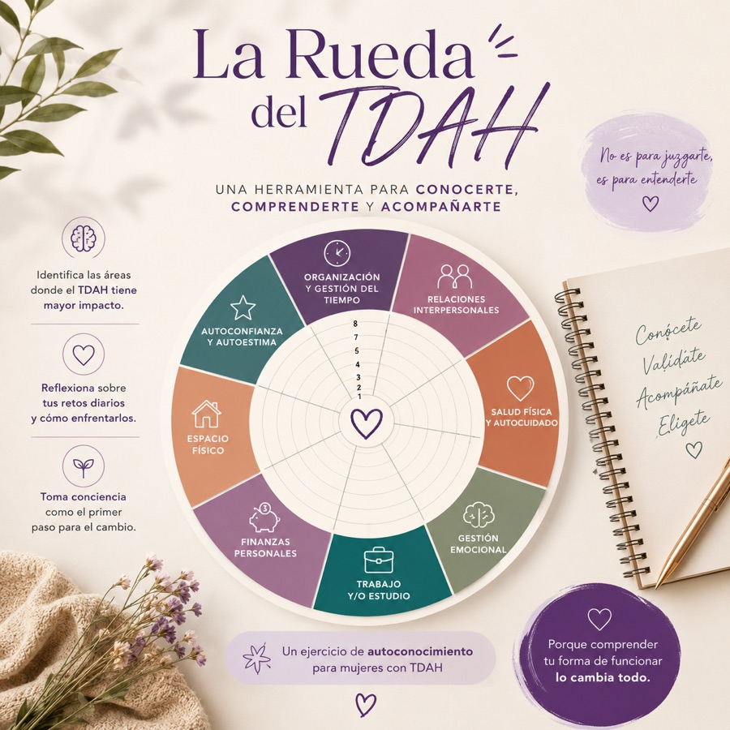

Psicopedagoga
Una mirada educativa y neurodivergente para comprender cómo aprendes, organizas y funcionas.
TDAH en mujeres
Una mirada diferente al TDAH femenino para dejar de exigirte funcionar como los demás y empezar a construir desde ti.
Sobre mí
Psicopedagoga y coach especializada en TDAH femenino.
Durante mucho tiempo pensé que tenía que esforzarme más, organizarme mejor, ser más constante y dejar de «complicarme tanto».
Hasta que entendí que no necesitaba seguir intentando encajar en una forma de funcionar que no estaba hecha para mí.
Tengo TDAH y, con el tiempo, aprendí que entender mi cerebro no significaba justificarme ni conformarme. Significaba dejar de luchar contra mí misma y empezar a conocerme de verdad.
Hoy acompaño a mujeres con TDAH —diagnosticado o sospechado— que están cansadas de sentirse desorganizadas, abrumadas, intensas o «demasiado», a comprender cómo funciona su cerebro y encontrar maneras más amables y realistas de vivir.
No creo en fórmulas mágicas, ni en convertirte en una versión más productiva de ti.
Creo en el autoconocimiento, la regulación, la organización compasiva y en construir estrategias que se adapten a ti, y no al revés.
Porque no necesitas cambiar quién eres.
Necesitas entender cómo funcionas.
Una mirada educativa y neurodivergente para comprender cómo aprendes, organizas y funcionas.
Acompañamiento práctico para convertir ese conocimiento en cambios posibles.
Para ayudarte a desarrollar conciencia sobre tus pensamientos, emociones e impulsos, sin tener que reaccionar automáticamente ante ellos.
No hablo del TDAH femenino solo desde la teoría. También conozco el proceso de reconstruirte después de entenderte.
Comprender
Durante años se ha estudiado y diagnosticado sobre todo en niños. En muchas mujeres pasa desapercibido porque se manifiesta de otra forma.
El TDAH cambia a lo largo de la vida. Los síntomas pueden intensificarse durante el ciclo menstrual, el embarazo, el posparto y la perimenopausia.
No siempre se ve como imaginas. El perfeccionismo, la ansiedad y el sobreesfuerzo suelen enmascarar las dificultades y retrasar el diagnóstico.
El caos suele ocurrir por dentro. Pensamientos acelerados, agotamiento mental, culpa y sobrecarga emocional son experiencias frecuentes en muchas mujeres con TDAH.
Recursos
Herramientas creadas para ayudarte a comprenderte, organizarte y avanzar de una forma que tenga sentido para ti.

La Rueda del TDAH es una herramienta de autoconocimiento que te ayudará a identificar cómo el TDAH está impactando diferentes áreas de tu vida.
A través de un ejercicio sencillo, evaluarás 8 áreas clave: organización, relaciones, autocuidado, gestión emocional, trabajo o estudio, finanzas, espacio físico y autoestima. Al completar la rueda, obtendrás una representación visual de tus principales desafíos y de las áreas que pueden necesitar más atención y apoyo.
Este recurso no tiene fines diagnósticos. Su objetivo es ayudarte a desarrollar una mayor comprensión de ti misma y de tu forma única de funcionar.
Porque el primer paso para generar cambios es tomar conciencia de dónde te encuentras hoy.
9,20 €
Comprar¿Te has preguntado alguna vez si algunas de las dificultades que has vivido durante años podrían estar relacionadas con el TDAH?
Este cuestionario ha sido creado especialmente para mujeres que quieren comprender mejor su forma de pensar, sentir y funcionar. Te ayudará a reconocer patrones y características que pueden estar presentes en el TDAH femenino y a reflexionar sobre cómo estos pueden estar influyendo en diferentes áreas de tu vida.
No es una prueba diagnóstica, pero sí puede ser un primer paso para conocerte mejor, poner nombre a algunas experiencias y decidir si quieres profundizar en la comprensión de tu cerebro.
Porque entenderte también es una forma de empezar a cuidarte.
6,15 €
ComprarSer madre con TDAH puede hacer que la crianza se sienta más intensa, agotadora y difícil de lo que imaginabas. Y no porque seas una mala madre, sino porque estás intentando responder a las demandas de la maternidad mientras gestionas un cerebro que funciona de otra manera.
Este ebook es una guía práctica para comprender mejor cómo el TDAH puede influir en tu maternidad y encontrar estrategias sencillas para organizarte, regular tus emociones y acompañar a tus hijos desde una crianza más consciente y respetuosa.
Menos culpa. Más comprensión. Más herramientas para ti y tu familia.
8,35 €
ComprarDa el primer paso para entender tu mente y organizar tu vida a tu manera.
Ver los recursosContacto
Sígueme en redes o escríbeme cuando quieras.